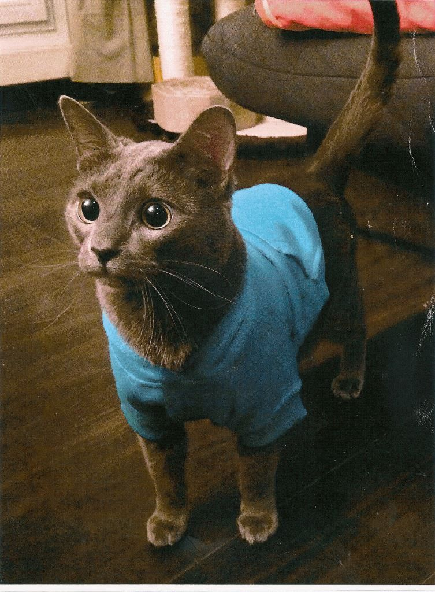
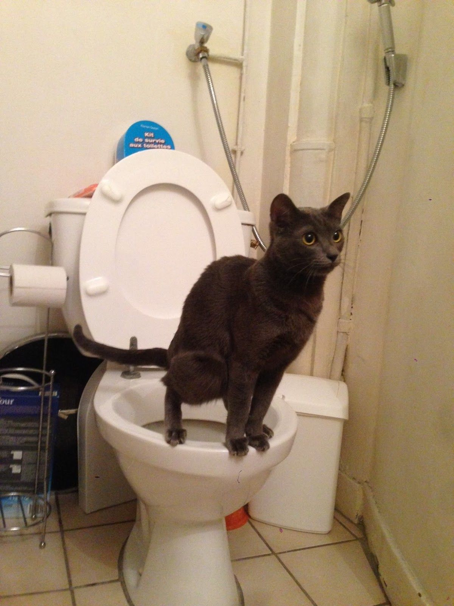
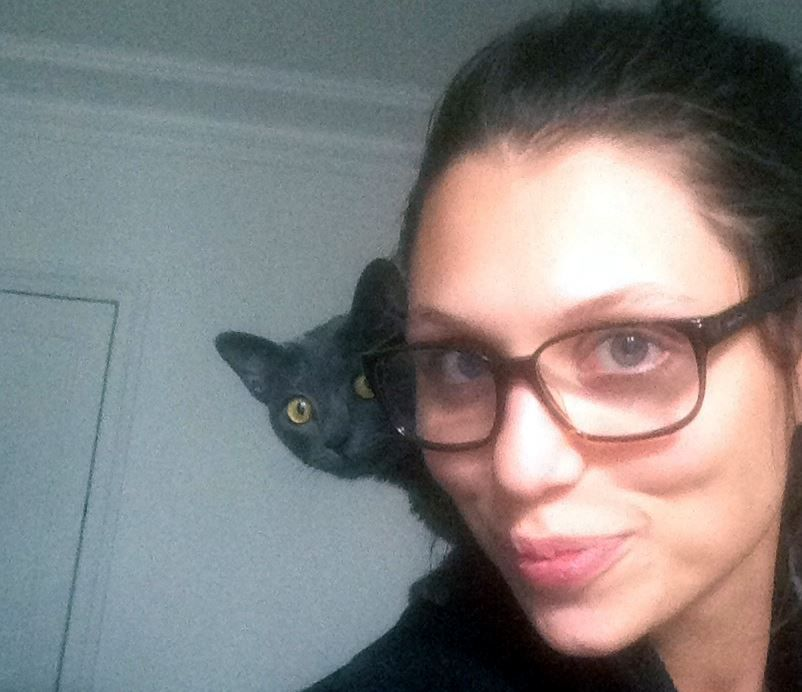
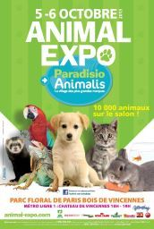

automne 2014
Sommaire
Henki
Korat à l'Ile Maurice
Un Korat bien né est facile à dresser
Animal Expo invitation
Amour Korat Réservation
Henki

Henki pour ses deux ans. Merci pour l'attention. Toujours un plaisir quand le facteur amène une enveloppe avec votre adresse en expéditeur ;)
Un Korat bien né est facile à dresser
par exemple faire dans les toilettes (ci-dessous Iggy il y a quelques jours).

Amour Korat Iggy Louise,
bravo à sa Maîtresse

Ci-dessous une photo artistique de Ioshi (frère d'Iggy Louise) il y a quelques jours.

Animal Expo invitation

Invitation gratuite.
Une précision sur le mailing émis pour exposer gratuitement à Animal Expo 2014. Gracieusement invités par les juges pour la qualité des chats de l'élevage (il faut cependant apporter sa cage d'exposition), l'invitation a été transmise aux propriétaires de chats d'amour Korat d'Île-de-France (l'élevage n'exposant pas).
Pourquoi pas les autres chats d'Amour Korat hors Île-de-France ?
Un chat n'aime pas changer ses habitudes, si en plus d'une journée stressante pour lui (malgré les apparences avec les relaxants que vous lui aurez donné), vous ajoutez un voyage voir une nuit ailleurs, c'est inhumain, pardon infélin ! Laissez donc votre Korat tranquillement chez vous si vous l'aimez.
Pourquoi l'élevage Amour Korat déconseille d'exposer son chat ?
L'année dernière, les urgences vétérinaires ont été appelées pour Ilys trois mois après avoir été à Animal Expo (bien rétablie après quelques semaines d'antibiotiques). Lors d'une exposition, sont présents plusieurs centaines de chats. Malgré un contrôle vétérinaire à l'entrée, statistiquement, des chats porteurs de maladies qui contaminent les autres sont toujours présents.
Heureusement, un chat peut parfois vivre une longue vie tout en étant porteur de maladie.
Les chats de l'élevage Amour Korat ne sont pas présentés aux expositions notamment pour cette raison d'hygiène. Il faut plusieurs mois pour qu'un chat contaminé devienne positif à une maladie. Il sera alors contagieux mais ne déclenchera pas forcément sa maladie.
Maladie : prévention
Il faut rester humble face à la maladie. Aucun élevage ne peut prétendre être indemne de maladie à 100%, sauf le seul jour où il serait testé sur tout. Plus un félin entre en contact avec d'autres félins, plus le risque de contagion augmente (les statistiques des élevages participant aux expositions sont unanimes : il est alors impossible de ne pas être porteur de maladies).
Moins un chat bouge de chez lui, meilleure sera sa prévention, mieux il se portera car moins il aura de malchance de devenir porteur d'une maladie. Aucun vaccin n'immunise à 100%. Toutes les maladies ne possèdent pas leur vaccin préventif.
clic ici pour voir le film en plein écran
Amour Korat Réservation
Actuellement concernant les chats de l'élevage Amour Korat, s'il est possible d'adopter immédiatement de très jeunes chats adultes ("seconde main"), il faut compter environ un an d'attente après avoir réservé pour adopter un chaton (les chatons nés étant adoptés par les personnes ayant les plus anciennes réservations).